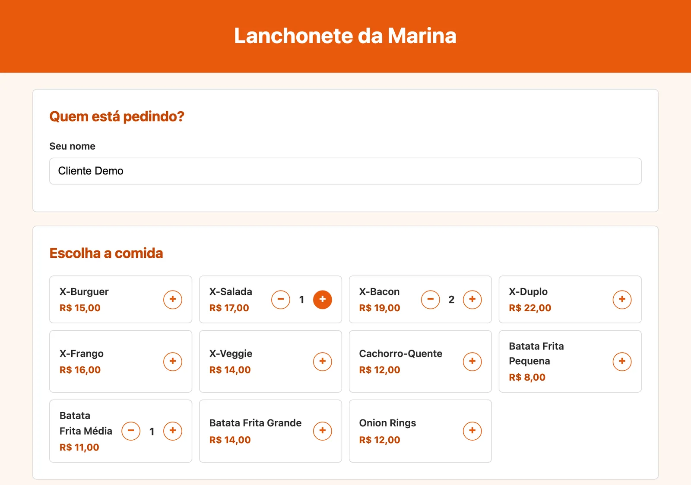
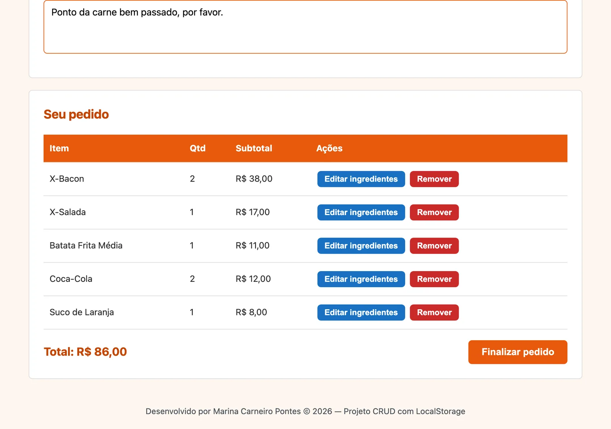
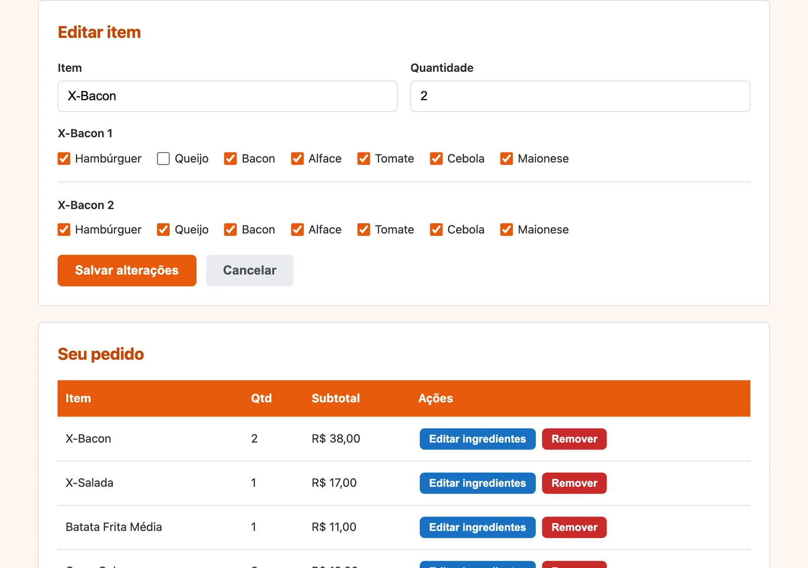
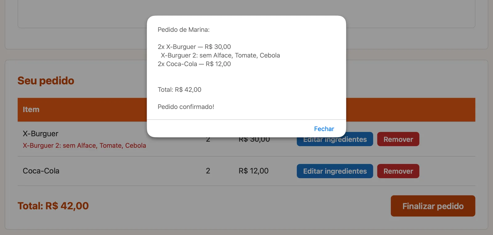
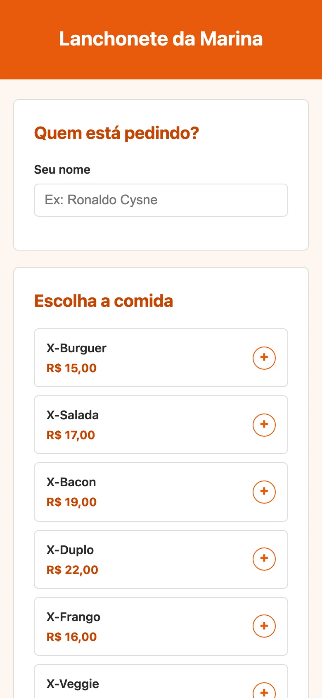
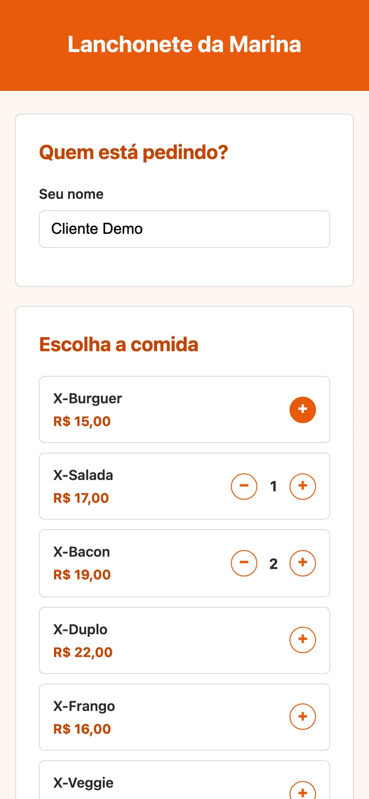

Web app · CRUD
Lanchonete da Marina
Sistema de pedidos para lanchonete com CRUD completo, edição de ingredientes por unidade e persistência no navegador, feito em JavaScript puro.


Objetivo e proposta
Trabalho da 2ª avaliação da disciplina Código de Alta Performance Web: um fluxo de pedido completo, do nome do cliente à confirmação, com as quatro operações de um CRUD e sem frameworks.
O cliente monta o pedido pelo cardápio, ajusta cada lanche do seu jeito e finaliza com um resumo detalhado.
Funcionalidades
- 01
Cardápio
Hambúrgueres, cachorro-quente, porções e bebidas, com controle de quantidade (+/−) direto em cada card.
- 02
Seu pedido
Tabela com quantidade e subtotal por item, total geral e botão de finalizar.
- 03
Ingredientes por unidade
Cada unidade de um lanche pode ser editada separadamente. Ingredientes base, como pão e batata, não aparecem como opção de remoção.
- 04
Remoção com confirmação
Excluir um item pede confirmação antes de alterar o pedido.
- 05
Persistência
Nome do cliente, itens e observações ficam salvos no navegador e sobrevivem a recarregar a página.
- 06
Responsivo
Layout que se adapta ao celular.
Destaques técnicos
- HTML semântico e JavaScript sem dependências, separados em estrutura, estilo e lógica.
- Delegação de eventos para os botões do cardápio e da tabela, que são renderizados dinamicamente.
- Publicado na Vercel.
Tecnologias
- HTML
- CSS
- JavaScript
- LocalStorage
- Vercel
Galeria










